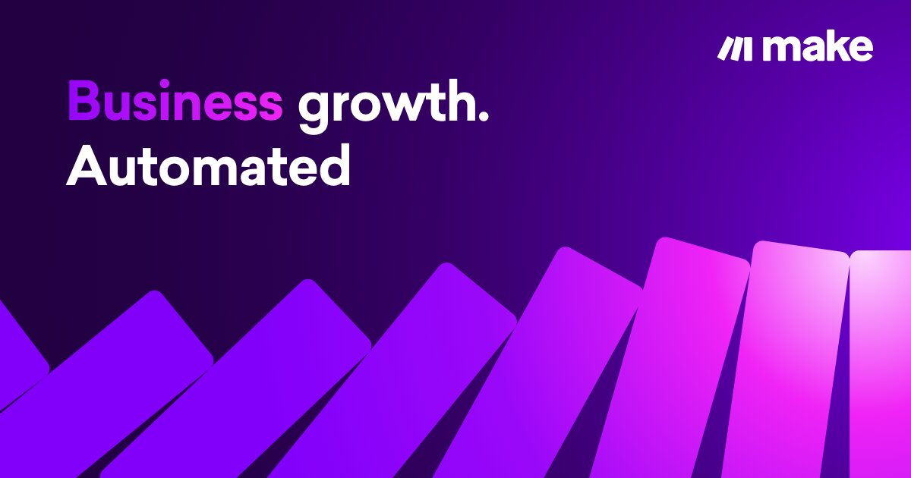
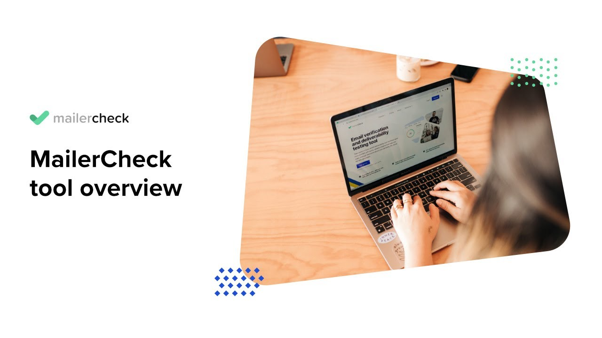
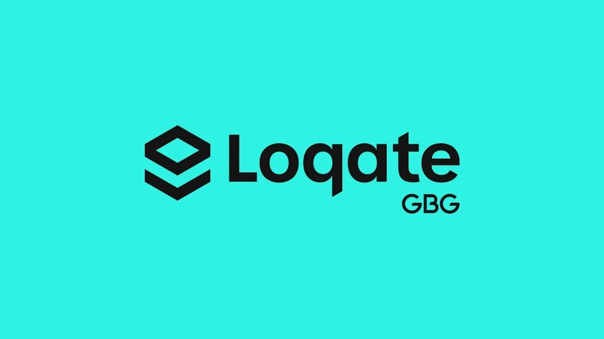
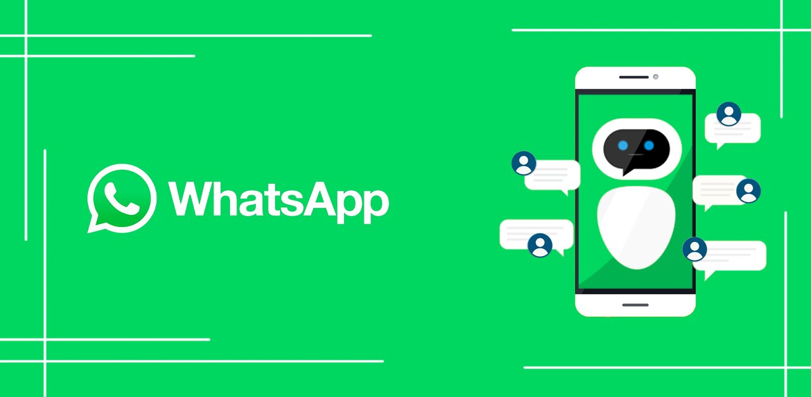
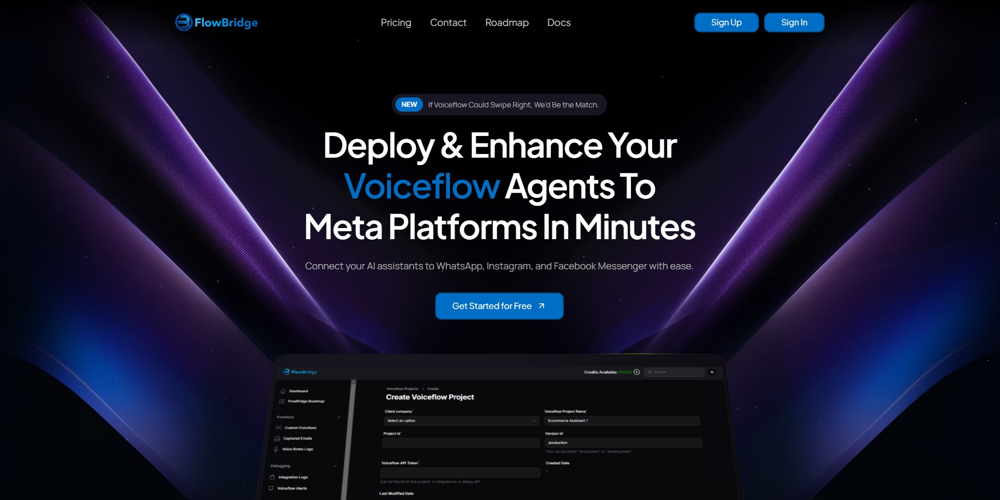
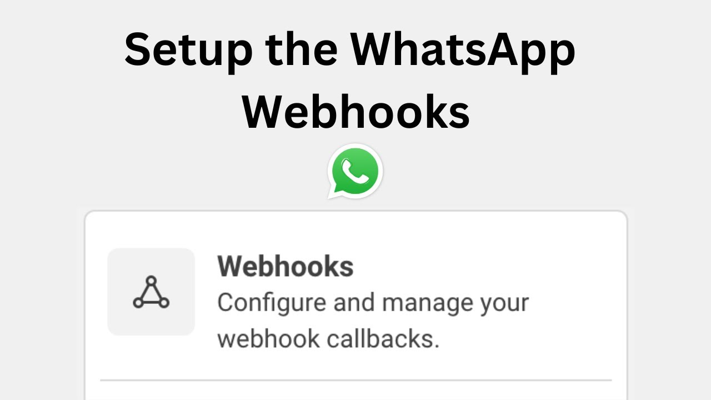

Make (Integromat) et Google Cloud
Pour connecter Voiceflow à d'autres applications utiles, j'ai utilisé Make, anciennement connu sous
le nom d'Integromat. Cette plateforme d'automatisation a joué un rôle crucial en liant l'API
Gmail
de Google Cloud au chatbot. L'intégration via Make a permis au chatbot de gérer des tâches
telles
que l'envoi automatique d'e-mails directement depuis l'interface du chatbot, facilitant ainsi des
interactions telles que la confirmation de rendez-vous ou l'envoi d'informations médicales
importantes, de manière sécurisée et conforme aux normes de confidentialité.

MailerCheck
MailerCheck
a été utilisé pour vérifier la validité des adresses e-mails fournies par les
utilisateurs lors des interactions avec le chatbot. En utilisant des tokens, cette API a permis de
s'assurer que chaque adresse e-mail entrée était non seulement formatée correctement, mais aussi
réellement existante et active. Cela a réduit le risque d'erreurs dans la communication et a
amélioré l'efficacité des campagnes d'information ou de suivi automatisé par e-mail.

Loqate
Similairement à MailerCheck, Loqate a été
intégré pour valider les numéros de téléphone saisis par
les utilisateurs. Cet outil a assuré que les numéros de téléphone étaient valides et pouvaient
recevoir des appels ou des SMS, ce qui est crucial pour les confirmations de rendez-vous ou les
urgences. L'utilisation de tokens a également permis de vérifier la conformité et la validité des
informations entrées, assurant ainsi une communication fiable et précise avec les patients.

Intégration du chatbot sur WhatsApp avec flowbridge
Première étape : (Création de l'application sur Meta)
Pour débuter, j'ai créé une application via la plateforme Meta for Developers. Cela m'a permis
d'accéder à diverses options d'intégration, y compris celle pour WhatsApp, essentielle pour la suite
du projet.
Deuxième étape : (Intégration avec WhatsApp)
Dans les paramètres de mon application, j'ai sélectionné l'intégration avec WhatsApp. J'ai ensuite
configuré une identification en tant qu'administrateur et activé les permissions nécessaires pour
exploiter les différentes fonctionnalités de WhatsApp. Cette configuration a généré un token
d'accès, crucial pour les étapes suivantes.

Configuration sur Flowbridge et Intégration client
Troisième étape :
Je me suis dirigé vers Flowbridge que
j’ai découvert sur youtube et qui est une interface permettant de créer le pont entre mon projet
voiceflow et le compte whatsapp permettant d’intégrer le chatbot facilement sur WhatsApp. Là, j'ai
créé un projet qui portait le même nom que mon projet Voiceflow. J'ai récupéré l'ID du projet et la
clé d'API Voiceflow dans les paramètres de mon application pour les saisir dans Flowbridge.
Quatrièeme étape :
J'ai procédé à la création d'une intégration client sur Flowbridge, en choisissant parmi les options
d'intégration pour WhatsApp. J'ai utilisé le token WhatsApp, créé précédemment sur Meta, pour cette
intégration.

Configuration des Webhooks et Ajout du numéro de téléphone
Cinquième étape :
Ensuite, j'ai récupéré l'URL de l'intégration client réalisée sur Flowbridge et l'ai entrée dans la
partie Webhook
WhatsApp URL callback sur Meta. J'ai également entré le token fourni, modifié les
champs du webhook selon nos besoins, et activé l'option pour recevoir des messages.
Sièxème étape :
Pour finaliser l'intégration du chatbot sur WhatsApp, Il a été donné un numéro de test de type
américain par défaut pour réaliser des essaies de conversation avec le chatbot mais cela ne marchais
pas. J’ai donc consulté le docteur et il à été convenu d’ ajouter le numéro de téléphone
professionnel du cabinet qui à été acheté spécialement pour le chatbot. Cette dernière étape était
cruciale pour permettre au chatbot de fonctionner pleinement et d'interagir avec les patients via
WhatsApp.